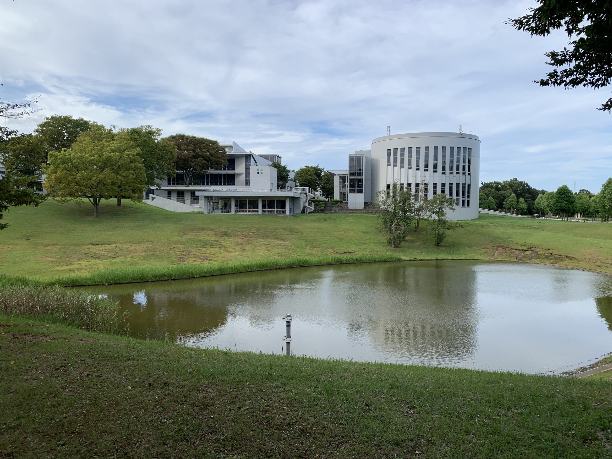

SFC生向け情報 ／ For Keio SFC Students

研究会
研究会B1では，社会学・人口学の理論や方法，国際移動に関する文献を輪読します．研究会B2では，各自の個人研究について報告します．
テーマは自由ですが，社会学や人口学の枠組みで問いを設定することを求めます．方法論は定性的手法，定量的手法，その組み合わせ等，問いにあったものであれば，自由です．アカデミックな論文が読める/書けるようになることを目標としています．
これまでに読んだ文献の一例
社会学・人口学の基礎と方法
- 富永健一，1995，『社会学講義――人と社会の学』中央公論社．
- 河野稠果，2007，『人口学への招待――少子・高齢化はどこまで解明されたか』中央公論新社．
- 松木洋人・中西泰子・本多真隆，2023，『基礎からわかる社会学研究法――具体例で学ぶ研究の進めかた』ミネルヴァ書房．
- エレーナ・ローデ・今井耕介・原田勝孝，2025，『新・社会科学のためのデータ分析入門 導入編』岩波書店．
- 筒井淳也，2023，『数字のセンスを磨く――データの読み方・活かし方』光文社．
- 小熊英二，2022，『基礎からわかる論文の書き方』講談社．
国際移動とエスニシティ
- de Haas, Hein, 2024, How Migration Really Works: 22 Things You Need to Know About the Most Divisive Issue in Politics, Penguin Books.
- 永吉希久子，2020，『移民と日本社会――データで読み解く実態と将来像』中央公論新社．
- 是川夕，2025，『ニッポンの移民――増え続ける外国人とどう向き合うか』筑摩書房．
- 水野直樹・文京洙，2015，『在日朝鮮人――歴史と現在』岩波書店．
この他，American Sociological Review，Demography，『社会学評論』『理論と方法』等掲載の論文も読むことがありました．
卒業プロジェクト
私を卒業プロジェクトのメンターにしたい方は，私の卒業プロジェクトを履修できることを学事に確認してからご連絡ください．
原則として，卒業プロジェクトの履修規定を満たしていることに加え，卒業プロジェクト1の履修前の学期までに私の研究会に参加をした上で，卒業プロジェクトの方向性に関して私の了解を得ていることを条件とします．私の講義科目（社会構造分析，社会動態論，ポピュレーションダイナミクス，方法論探究）のうち，最低1科目を4年生開始前までに履修しておくことを強くお勧めします．
また，4年生になるまでに，私の授業に限らず，方法論探究・質的調査法・社会科学の計量分析・データサイエンス系列の授業など，社会科学分野の研究方法論に関するSFCや三田での講義を履修して，研究方法論に関する学びを始めていることが前提となります．
Research Seminars
In Research Seminar B1, we read and discuss assigned literature on sociological and demographic theory and methods, as well as on international migration. Research Seminar B2 is where participants report on their own individual research.
You may choose any topic as long as you frame your research questions within sociology and/or demography. Methodologically, participants are free to use qualitative methods, quantitative methods, or a combination of both, as long as they suit your topic and research question. The goal is for you to eventually write your own academic papers.
A sample of past readings
Foundations and methods in sociology and demography
- 富永健一，1995，『社会学講義――人と社会の学』中央公論社．
- 河野稠果，2007，『人口学への招待――少子・高齢化はどこまで解明されたか』中央公論新社．
- 松木洋人・中西泰子・本多真隆，2023，『基礎からわかる社会学研究法――具体例で学ぶ研究の進めかた』ミネルヴァ書房．
- エレーナ・ローデ・今井耕介・原田勝孝，2025，『新・社会科学のためのデータ分析入門 導入編』岩波書店．
- 筒井淳也，2023，『数字のセンスを磨く――データの読み方・活かし方』光文社．
- 小熊英二，2022，『基礎からわかる論文の書き方』講談社．
Migration and ethnicity
- de Haas, Hein, 2024, How Migration Really Works: 22 Things You Need to Know About the Most Divisive Issue in Politics, Penguin Books.
- 永吉希久子，2020，『移民と日本社会――データで読み解く実態と将来像』中央公論新社．
- 是川夕，2025，『ニッポンの移民――増え続ける外国人とどう向き合うか』筑摩書房．
- 水野直樹・文京洙，2015，『在日朝鮮人――歴史と現在』岩波書店．
We have also read journal articles from American Sociological Review, Demography, 『社会学評論』, and 『理論と方法』, among others.
Graduation Project
If you would like me to be your mentor for your graduation project, please contact me after confirming through Shonan Fujisawa Campus Registrar that you are able to register for my graduation project course.
As a general rule, besides meeting the requirements set by the SFC Registrar, you should have started participating in my research seminar (Kenkyūkai) by the semester before registering for your Graduation Project 1 (Sotsugyō purojekuto 1). Taking at least one of my courses (Macroscopic Social Analysis, Social Dynamics, Population Dynamics and Methodology Study) before starting your senior year is highly recommended.